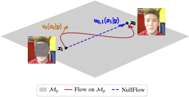
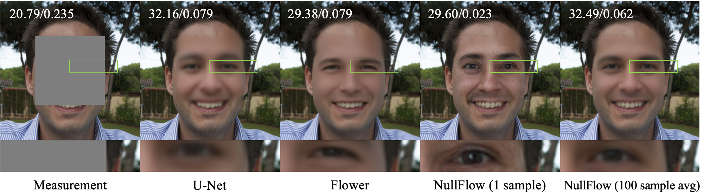
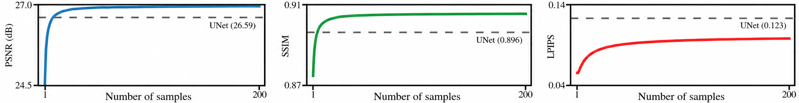

Abstract
We propose NullFlow, a principled framework for one-step generative image reconstruction. The key idea is to confine the generative flow to a measurement-consistent subspace. Because the flow never leaves this subspace, NullFlow needs no separate data-fidelity corrections, unlike existing solvers. NullFlow samples in a single network evaluation by learning the flow’s average velocity, avoiding the step-by-step integration of traditional flow matching methods.

Method
For ill-posed linear inverse problems, the measurement determines only the row-space component of the image, while the null-space component must be inferred from prior knowledge. NullFlow keeps the measurement-consistent part fixed and learns to generate plausible null-space content conditioned on the measurement.
Measurement-consistent subspace
My = { x : Ax = y }
Since every state stays inside this affine subspace, NullFlow is measurement-consistent by construction and does not need an additional projection or correction step during inference.
Algorithms
The training procedure learns the average conditional velocity in the null space, while inference reconstructs an image in a single network evaluation.
Algorithm 1: Training

Algorithm 2: One-Step Sampling

Results
On FFHQ center-mask image inpainting, NullFlow achieves strong perceptual quality with only one function evaluation. A single sample gives sharp and visually faithful reconstructions, while averaging multiple samples approaches the MMSE estimate and improves distortion-oriented metrics.
Quantitative Comparison

Representative Reconstructions

Effect of Sample Averaging

BibTeX
@article{shi2026nullflow,
title = {NullFlow: One-Step Generative Reconstruction},
author = {Shi, Xiao and Chandler, Edward P. and Park, Chicago Y. and Shoushtari, Shirin and Kamilov, Ulugbek S.},
journal = {Preprint},
year = {2026}
}